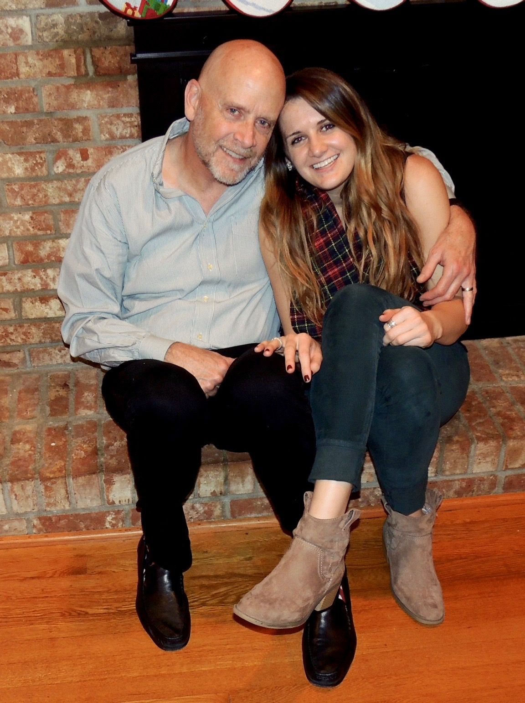
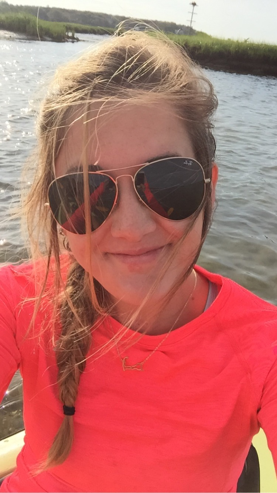

my daddy and i | Christmas Eve, 2015
Hey! I'm Addison, and I'm obsessed with butterflies.
Why butterflies? I'm glad you asked. To put it simply, they are a sign of beautiful change. Honestly, if I could put myself in a cocoon and come out with wings [aka -- never have to pay for a flight again], I'd be pretty amazed.
Anyway, aside from the physical magic of butterflies, they have special meaning in my life. My mom always told me to 'look for the butterflies'. I didn't really realize what she was talking about for awhile. I live in a city... looking for them took some effort. But one day, I came out of my own cocoon and it all made sense.
Life is all about change. Innovation. New beginnings. Seeing the light...even when you're stuck in a cocoon. My mom has taught me a heck of a lot about life, but this mom-ism was good.
My wings begin with tech, design and travel.
I used to work in digital marketing, so innovation was key in my work. But there was a point in my life when I felt like I was falling behind in everything to do with tech... AHH!
For anyone familiar with tech, 'falling behind' essentially puts you back A LOT. I had to do something fast. So I immersed myself into learning all about the world's most popular, 21st-century language: programming.
I knew that when I started to dream in code, my brain was on track to the nerdy, techy brain it is today. It took some work to get in the right mindset with this new language, but I am confident that anyone who puts their mind to do it can be a tech guru in no time!
Design has always come naturally to me. It is like an outlet for my creative side. I love it! I usually get all kinds of inspiration from traveling [everywhere and anywhere]. There is honestly nothing more exciting than planning a trip to explore somewhere completely new.

cape code kayaking | Summer, 2015